Bienvenido a la Saga de God of War
Explora la historia de Kratos, el Fantasma de Esparta, y su camino de venganza contra los dioses.
Bienvenido al mundo de God of War
Adéntrate en una de las sagas más legendarias de los videojuegos. God of War no es solo una historia de dioses y monstruos, es el viaje de un guerrero marcado por la tragedia, la furia y la redención.
Desde las sangrientas batallas contra el Olimpo en la mitología griega hasta los helados paisajes de la mitología nórdica, Kratos ha desafiado su destino, enfrentado a los mismísimos dioses y luchado contra sus propios demonios.
Prepárate para explorar mundos llenos de acción, criaturas mitológicas, puzles ancestrales y combates intensos. Aquí comienza tu travesía por una de las franquicias más aclamadas de todos los tiempos.
⚔️ ¿Estás listo para convertirte en el Dios de la Guerra?
Cronologia de la Saga
Desde su gran tragedia hasta la lucha contra los dioses y su viaje Nordico
📜 Cronología de la Saga God of War
Descubre el viaje de Kratos en el orden en que ocurrieron los eventos dentro del universo de la saga.
🔥 Era Griega
God of War: Ascension (PS3 - 2013)
Kratos, aún humano, lucha contra las Furias tras romper su pacto con Ares.
God of War: Chains of Olympus (PSP - 2008)
Kratos sirve a los dioses y enfrenta al titán Atlas y Perséfone.
God of War (PS2 - 2005)
Engañado por Ares, Kratos busca venganza y se convierte en el nuevo Dios de la Guerra.
God of War: Ghost of Sparta (PSP - 2010)
Kratos descubre la verdad sobre su hermano Deimos y enfrenta a Thanatos.
God of War II (PS2 - 2007)
Traicionado por Zeus, Kratos inicia su guerra contra el Olimpo.
God of War III (PS3 - 2010)
La batalla final contra los dioses culmina en la caída del Olimpo.
❄️ Era Nórdica
God of War (PS4 - 2018)
Kratos vive en Midgard con su hijo Atreus, pero su pasado lo persigue.
God of War Ragnarök (PS4/PS5 - 2022)
El fin de los tiempos se acerca, y Kratos y Atreus enfrentan su destino.
Personajes Legendarios
Conoce a los Dioses, Titanes y Guerreros que marcaron la historia de Kratos
⚔️ Personajes Legendarios
Conoce a los dioses, titanes y guerreros que marcaron la historia de Kratos.
🔥 Era Griega
Kratos El Fantasma de Esparta, protagonista de la saga, marcado por la tragedia y la venganza.
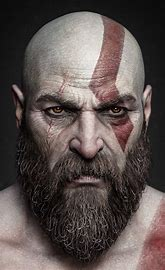
Ares Dios de la Guerra y primer antagonista de la saga.
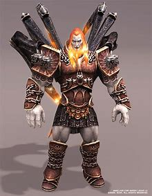
Zeus Rey del Olimpo y principal enemigo de Kratos en su guerra contra los dioses.
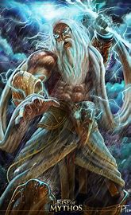
Atenea Diosa de la sabiduría, aliada y mentora de Kratos en varios juegos.
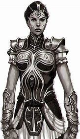
Hades Dios del Inframundo, enfrentado a Kratos en God of War III.
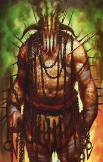
Poseidón Dios de los mares, su derrota provoca catástrofes en el mundo.
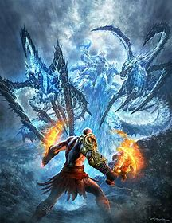
Hércules Hijo de Zeus y rival de Kratos, busca su propia gloria en God of War III.
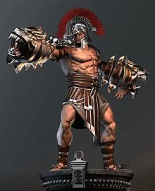
Deimos Hermano de Kratos, secuestrado en la infancia por los dioses.
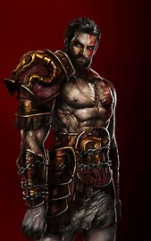
❄️ Era Nórdica
Atreus (Loki) Hijo de Kratos, con un destino vinculado a la mitología nórdica.
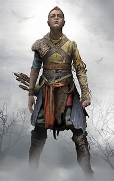
Baldur Hijo de Odín, invulnerable al dolor, principal antagonista en God of War (2018).
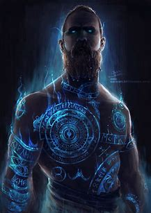
Freya Diosa Vanir, madre de Baldur, aliada y luego enemiga de Kratos.
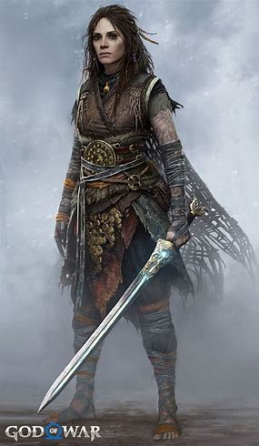
Thor Dios del trueno, uno de los enemigos más poderosos en God of War Ragnarök.
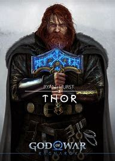
Odín Padre de todo, gobernante de Asgard y el gran villano de la saga nórdica.
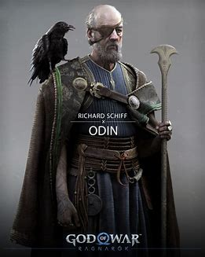
Týr Dios de la guerra nórdico, sabio y pacifista, clave en la historia de Ragnarök.
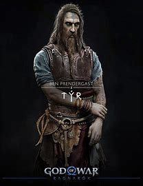
Jörmungandr La Serpiente del Mundo, vinculada a Atreus y el destino de los dioses.
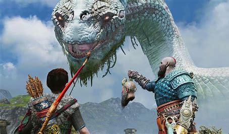
Como se Convirtio en un Dios de la Guerra
🔥 La caída de Ares y el ascenso de Kratos
Kratos era un comandante espartano que hizo un pacto con Ares para obtener poder y ganar sus batallas. Sin embargo, Ares lo manipuló y lo llevó a masacrar a su propia esposa e hija. Lleno de ira y culpa, Kratos juró vengarse del dios que lo engañó.
Los dioses del Olimpo le dieron una oportunidad: si lograba matar a Ares, obtendría la redención. Kratos atravesó desafíos imposibles, obtuvo la Caja de Pandora y se enfrentó a Ares en una batalla colosal. Con el poder de la caja, Kratos rompió el control que Ares tenía sobre él y lo asesinó con la Espada de los Dioses.
Tras su victoria, Kratos esperaba encontrar paz, pero los dioses se la negaron. Al ver su sufrimiento, Zeus y Atenea lo recompensaron dándole el trono de Dios de la Guerra, reemplazando a Ares en el Olimpo.
Desde ese momento, Kratos dejó su humanidad atrás y se convirtió en un dios brutal y despiadado, comenzando su reinado como el nuevo Dios de la Guerra.